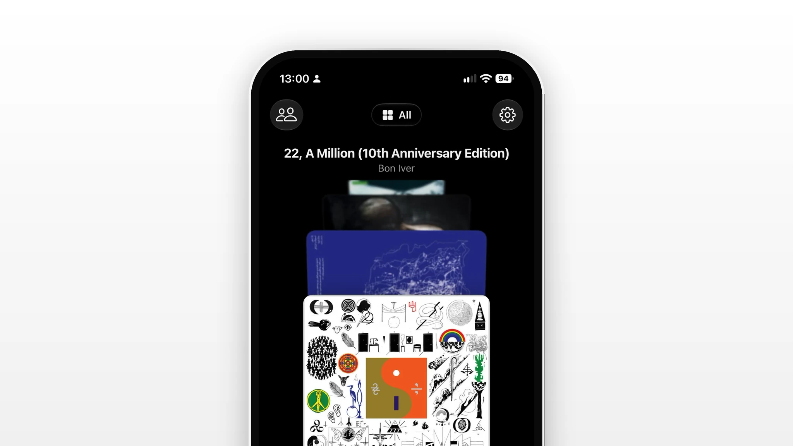
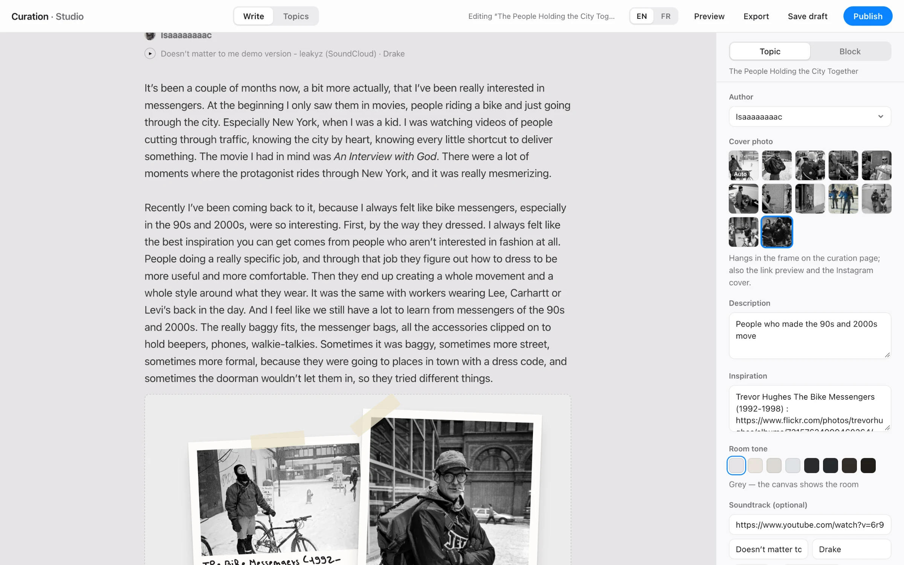

The Lab
Cabin
A Bandcamp player for Mac and iPhone, written in Swift. It turns the albums you’ve bought on Bandcamp into a collection you actually want to browse: flipped through like records in a crate, read like liner notes, and mapped by where the music comes from.
Try Cabin (opens in new tab)Mac & iPhone
Crate
Your collection as a stack of records, flicked through one sleeve at a time: a shelf of covers on Mac, a stack under your thumb on iPhone. Filter by New, Favourites, Downloaded or Imported, or switch to the grid, playlists and wishlist.


iPhone
Album page
Tracks first, then the liner notes: how often you’ve played it, the album’s story, where the artist is from, the receipt of your purchase and full credits.
Mac & iPhone
Now Playing
The artist, the album, its credits and synced lyrics around the artwork: side by side on Mac, a swipe away on iPhone, with the queue and AirPlay one tap off.
iPhone
Collection map
Every album pinned to where the artist is from, across your collection, your wishlist or your friends’. Open any place to see what’s from there, or start a radio of it.
Mac
Recap
Your year or month on Bandcamp: a cloud of the covers you played, the artists you supported, your sound by genre and a day-by-day calendar, saved as a playlist in one click.
Reed
A Mac reader that pulls everything I follow into one quiet feed: blogs, YouTube channels, podcasts, Are.na, Letterboxd, Backloggd and Bluesky side by side, grouped by when they landed. Written in Swift, with no account and nothing to sync.
Try Reed (opens in new tab)Mac
Add a source
Start from nothing: paste a link or type a name and Reed finds the feed behind it, whether it’s a YouTube channel, a blog, an Are.na profile or a podcast. The feed fills in as you add.
Mac
One feed
Everything you follow in one place, grouped by this week, last week, two weeks ago. Narrow it to a single kind of source from the menu, or scroll back through the months.
Mac
Watch in place
Videos open right in the feed with their description, and keep playing in a mini-player while you go back to browsing.
Mac
Podcasts
Episodes play in the same reader, with chapters you can jump between and the show notes below, then dock to the mini-player.
Curation Studio
The tool behind the curation on builtoberemembered, built for the web. Write a topic once, publish it with one button, then turn it into an Instagram carousel or a Reel. Every topic on the site so far has gone out through it.
See the curation (opens in new tab)Web
Four tools, one topic
Write: a page you write on, built from blocks (text, boards of photos, quotes, video, handwriting), with every setting in one side panel.
